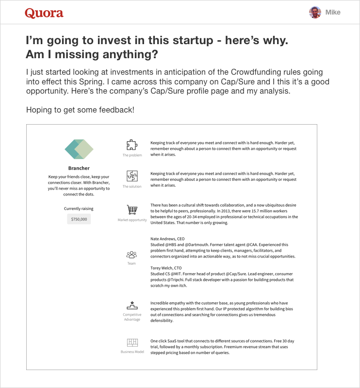
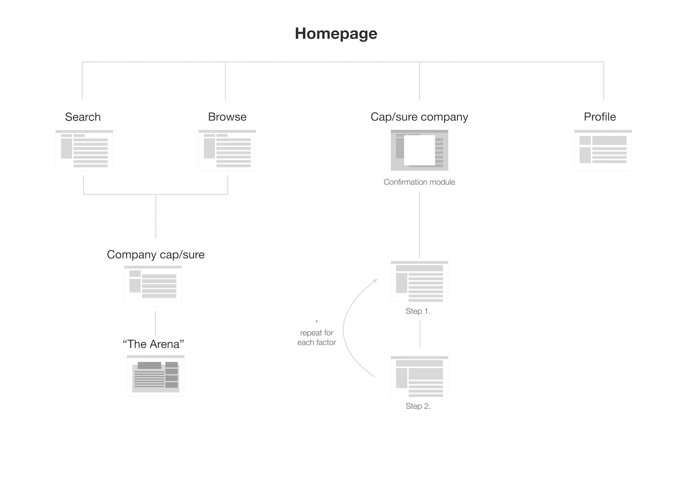

Overview
Startup Review is a web app for people interested in building companies. Every company is a problem and this is a way to crowdsource problem solving. Essentially, this comes down to users writing up reports using our framework, attaching those reports to companies on our platform, and then upvoting, debating, and critiquing each other in a productive manner. Inasmuch as titles matter, I am the Product Designer and Mike Cappucci is the Product Strategist.

The Challenge
People are interested in startups and early-stage investing. They're willing to contribute their time, expertise, and money. We're focusing on time and expertise, not money (i.e. investments).
It's easy to use up the crowd's time, it's harder to guide the crowd's focus into genuine expertise. Matt Mausner (CEO Woxxer) helped us frame the issue like this: it's the difference between an argument and a controversy.
- Argument: critiquing someone's opinion with a shared understanding of the topic.
- Controversy: critiquing someone's opinion without a shared understanding of the topic.
If I say global warming is a fact and you respond that economic development is more important, then we're in a controversy, not an argument. From my perspective, the topic is science; from yours, it's politics. If I say a company is a good investment because the team is perfectly balanced, and you respond that it's not because the business model is unsustainable, then again we're in a controversy. In both instances we are critiquing each other, but in neither are we making any progress.
How could we redirect controversies into arguments?
Research
First things first, are people even interested in having arguments?
Reddit, Quora, and Medium seem to prove so, but we're looking for a deeply level of back-and-forth, something along the lines of an art school critique but with strangers online.
We decided to run a test. We made up a company, Brancher, and wrote up a report of our analysis (we used the metrics Mike came up with earlier). We some posts to Reddit and Quora with a question we thought might generate some responses.
Test #1: Post
People responded. Not exactly as we hoped (they didn't follow our lead and use headers like The Problem, The Solution, The Team, etc.) but enough to show us that there is a genuine interest in having an argument.
Test #1: Response

Jobs-To-Be-Done
What job are people accomplishing when they get into these arguments? A job in this context is a goal, an outcome. The classic example is hiring a milkshape to accomplish a satisfying meal for a long commute (see Clay Christensen's video). We built our personas through this lens. We decided that the job our user is doing is, on a basic level, participating. To that end, they may be intereste in "hiring" Startup Review.

Information Architecture
If someone decides to use Startup Review for arguing about (i.e. participating in) startups, then the top leve category they'll want to browse through are the startups themselves. Once they've found a company, then they can dive into the arguments. There are seperate arguments for each section of the company's business model (Problem, Solution, Team, etc.).
Sketching
We built 3 sets of InVision prototypes, moving from low to higher fidelity.